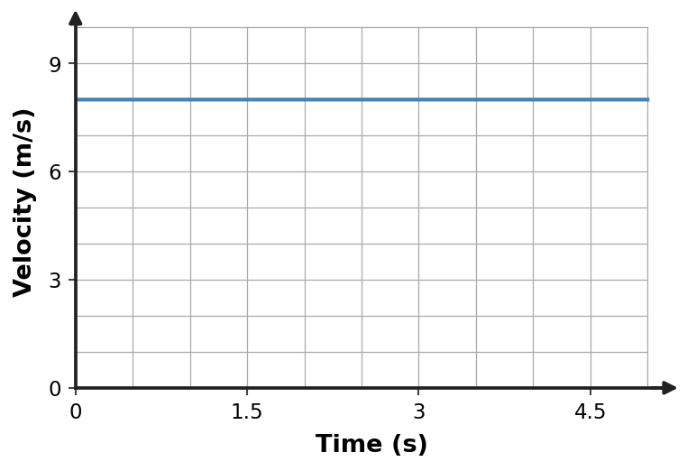
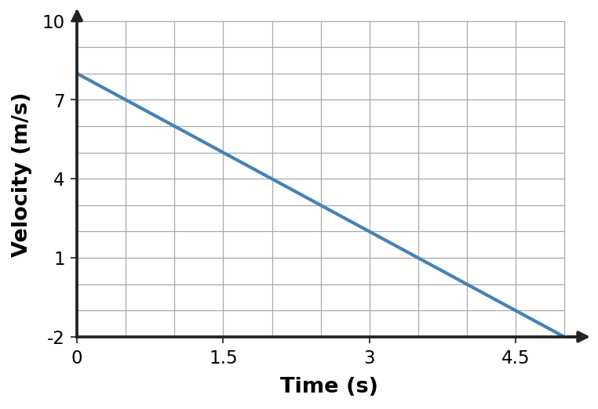
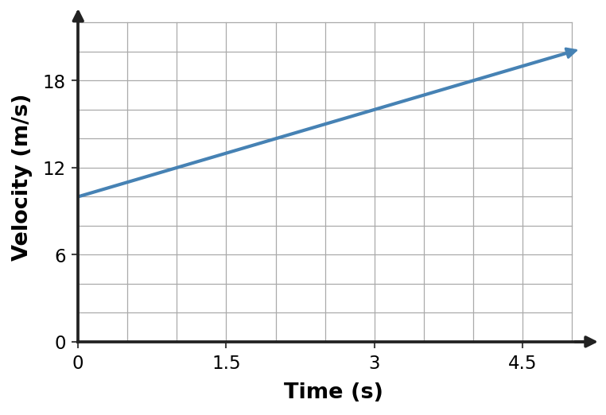
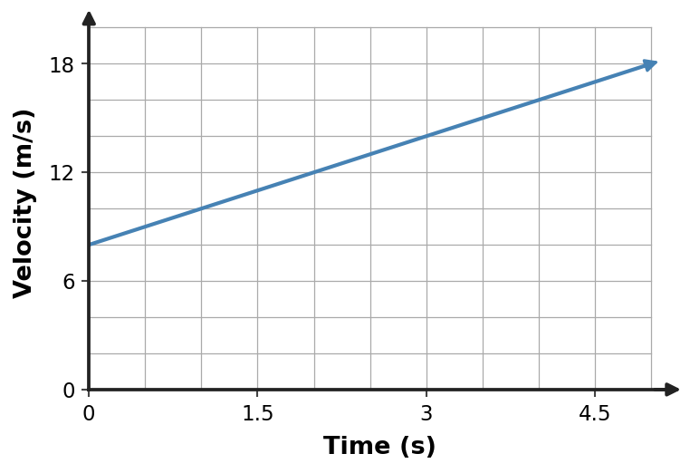

Section 2.3 — Extra Practice
Section 2.3 — Motion and Kinematics
1. A skateboarder moves west while slowing down. State the direction of the skateboarder’s velocity and acceleration, and explain why the skateboarder is accelerating even though speed decreases.
2. Use the velocity–time graph to identify whether the acceleration is positive, negative, or zero and justify your answer from the graph slope.
- positive acceleration
- negative acceleration
- acceleration cannot be determined from a velocity–time graph
- zero acceleration

3. Use the velocity–time graph to identify whether the acceleration is positive, negative, or zero and justify your answer from the graph slope.
- zero acceleration because velocity is shown on the vertical axis
- positive acceleration
- acceleration cannot be determined from a velocity–time graph
- negative acceleration

4. A cart’s velocity changes from 2 m/s to 14 m/s in 3 s. Calculate its average acceleration.
5. Use the velocity–time graph to identify whether the acceleration is positive, negative, or zero and justify your answer from the graph slope.

6. A car travels north and turns east at constant speed. Explain why it is accelerating during the turn even though its speed does not change.
7. A cart’s velocity changes from 1 m/s to 7 m/s in 2 s. Calculate its average acceleration.
- 6 m/s²
- 12 m/s²
- 4 m/s²
- 3 m/s²
8. A skateboarder moves west while slowing down. State the direction of the skateboarder’s velocity and acceleration, and explain why the skateboarder is accelerating even though speed decreases.
9. A cart’s velocity changes from 2 m/s to 8 m/s in 3 s. Calculate its average acceleration.
- 6 m/s²
- 18 m/s²
- 3.33333 m/s²
- 2 m/s²
10. A skateboarder moves east while slowing down. State the direction of the skateboarder’s velocity and acceleration, and explain why the skateboarder is accelerating even though speed decreases.
- Acceleration is zero whenever speed decreases.
- Velocity is east; acceleration is west. Acceleration is any change in velocity, including a decrease in speed.
- Velocity and acceleration are both east because the skateboarder is moving east.
- Velocity is west and acceleration is east because slowing reverses velocity instantly.
11. A cart’s velocity changes from 2 m/s to 18 m/s in 4 s. Calculate its average acceleration.
| Time | Velocity |
|---|---|
| 0 s | 2 m/s |
| 4 s | 18 m/s |
12. A cart’s velocity changes from 0 m/s to 8 m/s in 4 s. Calculate its average acceleration.
| Time | Velocity |
|---|---|
| 0 s | 0 m/s |
| 4 s | 8 m/s |
13. Use the velocity–time graph to identify whether the acceleration is positive, negative, or zero and justify your answer from the graph slope.
- zero acceleration because velocity is shown on the vertical axis
- positive acceleration
- acceleration cannot be determined from a velocity–time graph
- negative acceleration

14. A cart’s velocity changes from 2 m/s to 8 m/s in 2 s. Calculate its average acceleration.
15. Use the velocity–time graph to identify whether the acceleration is positive, negative, or zero and justify your answer from the graph slope.

16. Use the velocity–time graph to identify whether the acceleration is positive, negative, or zero and justify your answer from the graph slope.
- zero acceleration because velocity is shown on the vertical axis
- positive acceleration
- acceleration cannot be determined from a velocity–time graph
- negative acceleration

17. Use the velocity–time graph to identify whether the acceleration is positive, negative, or zero and justify your answer from the graph slope.

18. A car travels north and turns east at constant speed. Explain why it is accelerating during the turn even though its speed does not change.
19. A cart’s velocity changes from 3 m/s to 7 m/s in 2 s. Calculate its average acceleration.
- 4 m/s²
- 8 m/s²
- 5 m/s²
- 2 m/s²
20. A skateboarder moves west while slowing down. State the direction of the skateboarder’s velocity and acceleration, and explain why the skateboarder is accelerating even though speed decreases.
- Acceleration is zero whenever speed decreases.
- Velocity is west; acceleration is east. Acceleration is any change in velocity, including a decrease in speed.
- Velocity and acceleration are both west because the skateboarder is moving west.
- Velocity is east and acceleration is west because slowing reverses velocity instantly.
21. A cart’s velocity changes from 3 m/s to 11 m/s in 4 s. Calculate its average acceleration.
| Time | Velocity |
|---|---|
| 0 s | 3 m/s |
| 4 s | 11 m/s |
22. Use the velocity–time graph to identify whether the acceleration is positive, negative, or zero and justify your answer from the graph slope.

23. A skateboarder moves west while slowing down. State the direction of the skateboarder’s velocity and acceleration, and explain why the skateboarder is accelerating even though speed decreases.
- Acceleration is zero whenever speed decreases.
- Velocity is west; acceleration is east. Acceleration is any change in velocity, including a decrease in speed.
- Velocity and acceleration are both west because the skateboarder is moving west.
- Velocity is east and acceleration is west because slowing reverses velocity instantly.
24. A skateboarder moves east while slowing down. State the direction of the skateboarder’s velocity and acceleration, and explain why the skateboarder is accelerating even though speed decreases.
- Acceleration is zero whenever speed decreases.
- Velocity is east; acceleration is west. Acceleration is any change in velocity, including a decrease in speed.
- Velocity and acceleration are both east because the skateboarder is moving east.
- Velocity is west and acceleration is east because slowing reverses velocity instantly.